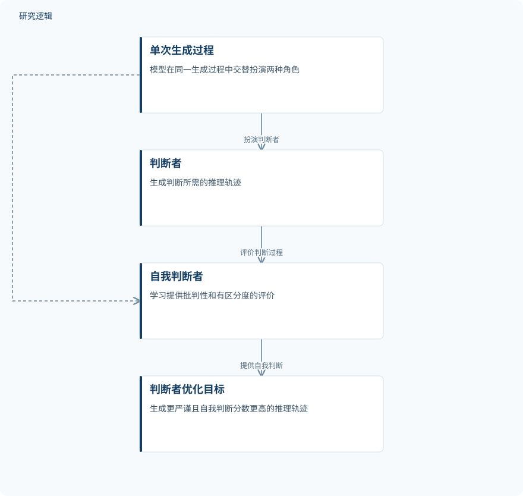

摘要解读
SEAR：自我评判的智能体奖励模型
SEAR: Self-Judging Agentic Reward Models
解读更新 2026-11-27 20:40 · 依据公开摘要整理，未核验全文细节
智能体奖励模型借助外部工具辅助大语言模型评估，却面临训练监督粗糙、过程标注成本高的问题。SEAR尝试让模型评价自己的判断过程，为理解这类模型如何自我演进提供了一个视角。
文章目录
当评估模型也需要审视自己的判断
智能体奖励模型通过引入外部工具使用能力，增强对大语言模型的评估。但摘要指出，这类模型的训练受到粗粒度结果监督的限制，而过程级标注又需要较高成本。
判断者与自我判断者的对抗协同演进
SEAR提出双角色对抗协同演进框架，让模型在单次生成过程中交替扮演判断者和自我判断者，从而对自身的判断过程进行评价。
判断者的优化目标是生成更严谨、能够获得更高自我判断分数的推理轨迹；自我判断者则学习提供具有批判性和区分度的评价。摘要同时称，该框架使智能体奖励模型能够不依赖外部人工标注而自我演进。
依据摘要整理的双角色协同示意


仅概括摘要明确陈述的角色和优化关系，不表达未报告的具体训练配置。
下载 SVG图示关系说明
实线表示相邻阶段的信息流，虚线表示跨阶段联系或反馈。
单次生成过程 → 判断者：扮演判断者；单次生成过程 → 自我判断者：交替扮演；判断者 → 自我判断者：评价判断过程；自我判断者 → 判断者优化目标：提供自我判断
摘要报告：多个基准上的可靠性提升
摘要报告，广泛实验表明，SEAR在多种基准上持续提升了智能体奖励模型的可靠性。这一结果支持作者对框架有效性的整体判断，但摘要没有给出具体提升幅度或各基准的结果。
仅凭摘要尚无法核验的范围
摘要未说明训练和评估样本的构成与规模，也未列出具体比较对象、基准名称及可靠性的衡量方式。因此，目前无法判断比较是否覆盖不同类型的方法，也无法细分结论的验证范围。
摘要同样未展开双角色训练的具体实现和实验配置。这些信息需要进一步查阅论文；摘要未报告，并不意味着论文没有开展相关分析。
阅读启发：关注自我评价如何发挥作用
阅读启发：对于关注大语言模型评估的读者，可进一步了解判断者与自我判断者如何交替、评价如何作用于推理轨迹，以及论文如何衡量可靠性。这些问题有助于理解摘要所报告的提升适用到什么范围。
以上为本站阅读启发与建议，不是论文已验证的结论。